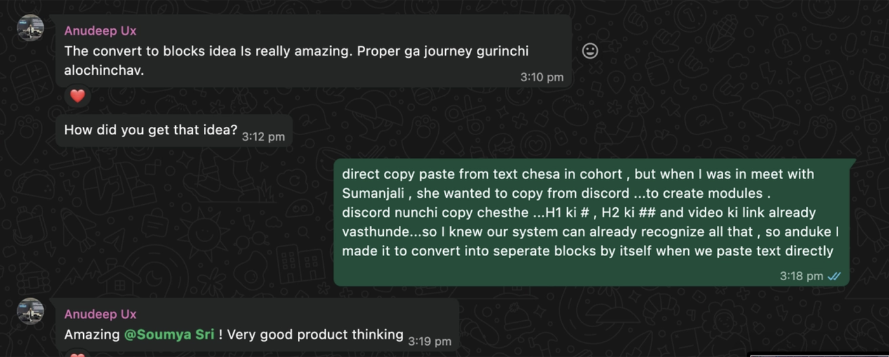
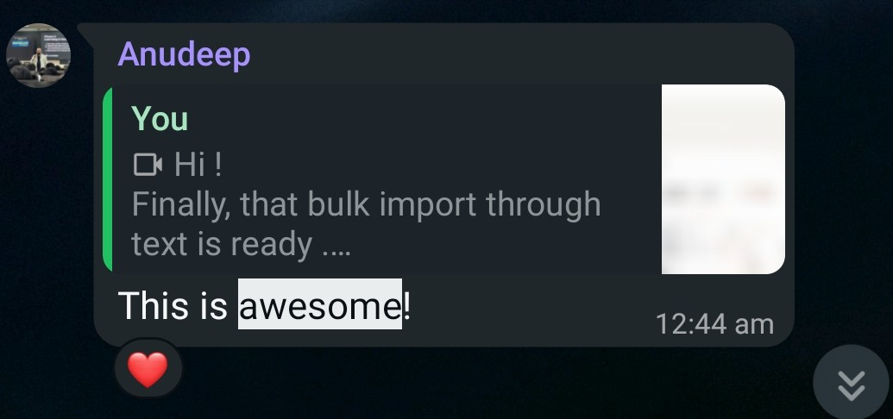
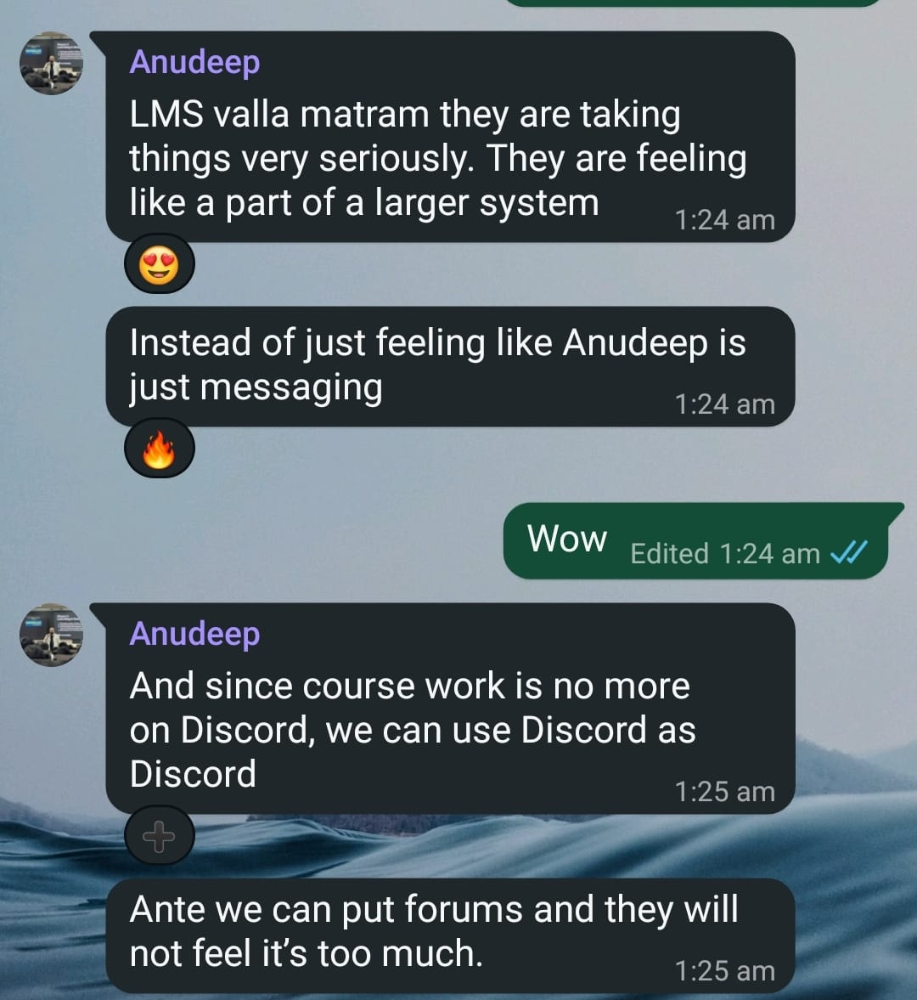

I design and develop end-to-end products for founders and startups.
I turn a founder's intent into a product they can run without me. A developer turned UX designer, I explore how UX and AI can eliminate cognitive load. For UX Gym, I designed and built the entire learning platform solo, cutting project reviews from a week to 2 days and admissions from 5 days to 4 hours.
30,000people a year use it
Guest house app Tata Steel
An enterprise app I designed and coded end to end, in my three years there (2021 to 2024)
300+students · 3 batches
UX Gym current work
Learning platform, 0 → 1, designed and built solo
25%more paying customers
AI UX launch
A four day live event the founder ran from his phone
↓ Keep scrolling
Client work · UX Gym
The lessons became interactive exercises students actually finish. Admission takes 4 hours instead of 5 days, and the founder runs every batch himself, with no developer.
Client · UX Anudeep · Founder, UX Gym · ex Amazon · mentored 5,000+ designers



“Because of the LMS, they are taking things very seriously. They are feeling like a part of a larger system.”
UX Anudeep, founder, on WhatsApp during the build. The first words are translated from Telugu.
The lessons became interactive exercises that students actually finish.
Your product next
I'll design it and build it around what you intend, and hand you a product you run yourself.
Client work · UX Gym
Each day's content opened when he chose, nothing waited on a developer, and he could see exactly who was staying while it happened.
Client · UX Anudeep · Founder, UX Gym · ex Amazon · mentored 5,000+ designers
Open to new work